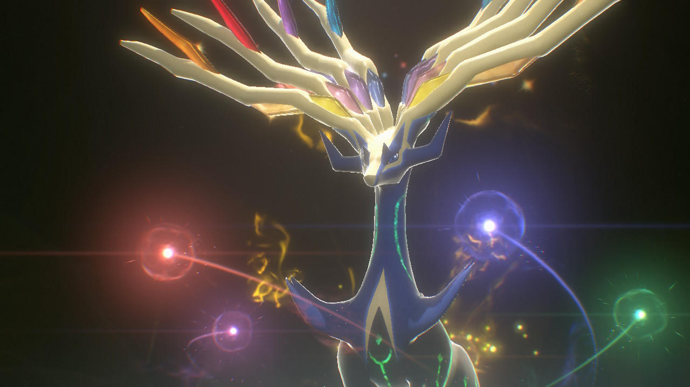

Pokemon
《宝可梦》（曾译名《精灵宝可梦》）另有常见非官方译名：《口袋妖怪》（中国大陆曾译名 [1] ）、《宠物小精灵》（中国香港曾译名）、《神奇宝贝》（中国台湾曾译名）。是由Game Freak和Creatures株式会社开发，任天堂发行的系列游戏，是宝可梦媒体作品的主要部分。最初的作品是在1996年于日本发行的Game Boy角色扮演游戏。宝可梦系列一直贯穿任天堂的各代掌机之中。系列中的游戏通常成对发售（有所区别），复刻版常在初版游戏发布的几年后出现。游戏的主系列由角色扮演类游戏组成，旁支系列的游戏则包含有其他的类型，例如动作角色扮演游戏、益智游戏和电子宠物等。2月27日为“宝可梦日”。 [91]

起源
田尻智于1989至1990年间，Game Boy刚刚流行时首次构思了宝可梦系列的创作。宝可梦世界的整体理念来自于田尻智儿时钟爱的昆虫收集。
冒险
本部作品包含了小智在关都地区、橘子群岛、城都地区的旅行。和小智一同旅行的有自行车被皮卡丘弄坏的小霞，以及原本是深灰市的道馆馆主、立志成为宝可梦培育家的小刚。在橘子群岛旅行期间，小刚留在了内木博士的研究所，作为宝可梦观察家的小建加入了小智一行。
世代
所有由宝可梦公司监制的正版宝可梦游戏可以大致被分为数个世代。这些世代大致按照发售的年代排序，当主系列游戏在发售时引入了新的宝可梦、角色和游戏玩法时，这一游戏被认为是系列的新一时代。主系列游戏和旁支游戏、动画、漫画和集换式卡片游戏均会在新世代开始之时进行升级